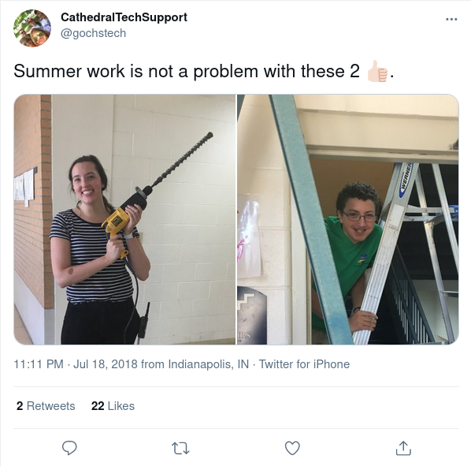

Hi, I'm Joe!
I have recently graduated from high school, and I am passionate about technology, specifically software and web development. I also enjoy reading and thinking, and I'm experimenting with sharing my thoughts on various topics through blog writing. I will attend the University of Texas at Dallas in the fall, studying Computer Science.
My Education
I have graduated from Cathedral High School in Indianapolis "cum Laude" in the top of my class, after taking a rigorous schedule of Advanced Placement classes and earning college credit in AP exams. I scored 1500 on both the PSAT and SAT, and my PSAT score qualifies me as a National Merit Scholarship Finalist, which guarantees me a full tuition, academic scholarship to certain schools, including the University of Texas at Dallas.
I also have acquired 29 credit hours at Ivy Tech Community College independently from my high school dual credit classes. These credits are entirely technically oriented towards an Associates in Applied Science in Software Development. I also received most of these credits during my eighth grade year, meaning that I have completed about one year of college credit toward a degree before entering high school, with a combined GPA of 3.025. Some examples of classes I took are: Programming in C#, Mobile App Development, Web Site Development, and Systems Analysis and Design.
Despite my impressive academic transcripts, most of what I have learned about computer science and software development has been through independent study and exercise. I began learning programming at the age of twelve, and quickly surpassed what introductory YouTube programming playlists could teach me. After a few years of devoted tinkering and development, I had laid a foundation of computer knowledge that extended to learning the fundamental concepts and practice of Java, basic web development with HTML, CSS, and JavaScript, and the basics of the Linux operating system. From my own self-study, I enrolled at Ivy Tech Community College during my seventh and eighth grade years and found the programming classes to be elementary, compared to what I was learning on my own. During high school, I took one computer science class, the most advanced level focusing on Java programming, and I could have taught the class myself. Outside of classes, I began experimenting with full-stack web development, including learning React and NodeJS, along with API programming and database management. This self-explored curriculum enabled me to pursue starting a software company during the summer before my Senior year building a web application to allow my school to livestream classes to students learning from home. This project was enormously instructive, although the home-cooked startup ultimately failed, as discussed below.
Technical Portfolio
Most of my technical ability is best demonstrated through two projects: this personal showcase/resume website, and my EduStream project (server, website, and deployed server). Both are written in Go on the backend. This website utilizes a SQLite database for blog post content, and the front-end is written in plain HTML/CSS/JS. I am self-hosting this website, utilizing tools like Nginx to reverse proxy and encrypt traffic to the basic Go HTTP server. My EduStream project used a cloud hosted MySQL database and React on the front-end, and the entire app was hosted in the cloud, beginning in AWS before transitioning to DigitalOcean because of pricing. Explore my GitHub for more of my tinkering and experimenting.
Work Experience
I have worked for three summers in my high school's technology department. I have taken on many roles and executed many tasks, including running cabling in classrooms, installing hardware in classrooms, reimaging workstations, and providing various other types of technical support. In the technology office, they know me as a dependable employee who is on time and ready to work.
EduStream Project
This has been my most technically demanding project, involving writing a full-stack web application to livestream video, deploying that technology stack to a cloud hosting service, and solving numerous hurdles throughout the process. I used React to write the front-end website, and that was hosted on an AWS S3 bucket. I used Go and the ffmpeg library on the back-end to write the livestreaming server, and the server was hosted in the cloud on DigitalOcean droplets and DigitalOcean cloud infrastructure. I used a managed MySQL database from DigitalOcean.
This project was intended to allow schools to livestream video feeds of classroom instruction to kids learning from home due to the COVID pandemic. The system was piloted in my own high school, which involved them installing security-like IP cameras in classrooms and an on-site server that would capture video feeds from the cameras and stream them to a server hosted in the cloud. I wrote all of the software involved, including the server that was deployed on-site to capture video feeds, the cloud server and associated infrastructure that ingested those video feeds and served them to viewers, and the website that streamed video from the server and also provided an administrator portal to monitor individual cameras and classes.
EduStream, as I named it, and EduStream LLC. eventually failed when my server design encountered performance bottlenecks before I had projected it would, and the demands of school overrode my investment in the project. I was operating on a very limited timescale--I had about two months to write, deploy, and test the system before the start of school--and a non-existent budget to try to pull together a working system and promote it to other schools. Technically, I was able to write working code and improve and fix that code, but I did not have the experience in real-world web development to know the challenges surrounding deploying that code, and I had never architected a system with scalability in mind, and so began on a flawed design.
In spite of failure, I learned more from working on this project than on any other project I have undertaken. Please check out my code, functional although messy and not well-commented, on my GitHub: Cloud server, on-site server, and website.